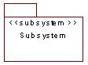

 |
A model element which has the
semantics of a package (it can contain other model elements)
and a class (it has behavior). The behavior of
the subsystem is provided by classes, or other subsystems,
it contains. A subsystem realizes one or more
interfaces, which define the behavior it can perform.
Subsystems are modeled as UML
packages stereotyped as <<subsystem>>.
|
| Related Information: |
|
Topics
Introduction 
Structuring
a system into subsystems helps reduce complexity, promote reuse
and enable parallel development.
A logical subsystem (the design
of a component system) exports only a subset of its types, classes
and other work products to re-users. The remaining work
products are hidden. This separation insulates a re-user
from the specific details of how a component system is implemented,
and allows internal changes to be made without necessarily impacting
the re-user. To support this separation, the component
system presents the reusable components through one or more
interfaces.
A subsystem encapsulates its internals
in order to minimize dependencies and rippling change as the
subsystem evolves.
When working with subsystems this
separation of interface from implementation can either be formally
modeled using separate facade
and implementation
packages or informally, by making the implementation of the
subsystem private within the subsystem itself.
By default all subsystems should
be defined formally. For details of how to model subsystems
in this way see Standards:
Formal Subsystem.
If the formal definition of the
subsystem is considered overkill then the standards for the
informal modeling of subsystems are detailed by Standards:
Informal Subsystem.
Naming Standard
The general package naming standards apply to
<<subsystem>> packages (See Standards:
Package Overview).
Diagramming Standards
For formal subsystems see Standards:
Formal Subsystem.
For informal subsystems see Standards:
Informal Subsystem.